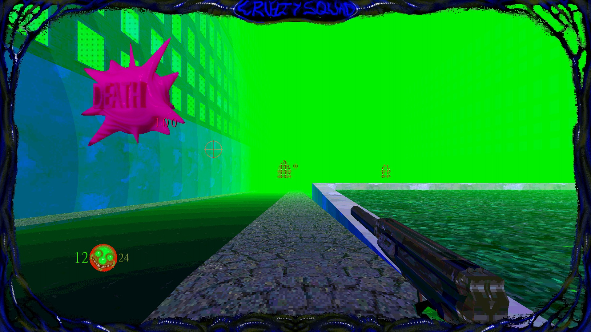
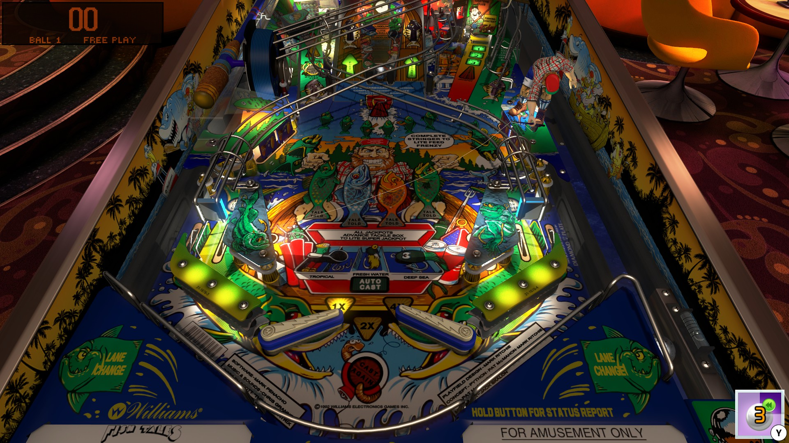

Civilization V is the fifth installation of the popular "4X" strategy game, a genre where you're tasked with conquering the globe, sharing your culture to all peoples,
and converting the flocks of every people to your religion. It was the first game I ever truly lost myself in, continuously pressing "one more turn" for over two thousand collective hours.
Video Credit: The Solar GamerFun Fact: The Solar Gamer got me introduced me to strategy game YouTube, which spawned a further love of the genre for me.
Released 0 years ago
Cruelty Squad
A super hard game masquerading as an MS-Paint nightmare.
A more recent addition to my favorites, by a solo developer known as Consumer Softproducts. It's a mix between a Hitman type assassination game,
and a satirous, hypercapitalist dystopian future where collecting organs and fish to sell on the in-game stock-market is apparently quite important. It's an extremely
strange game with at times jarring graphics or themes, but it's incredibly addictive purely because of all the methods you can use to complete a level. There's a lot of freedom in how you can play, and it's a game that rewards creativity.
Don't let the graphics fool you either, this game is a lot harder than it looks and levels such as Trauma Loop have required well over 100 tries for me to complete.

Released 0 years ago
City Skylines
The best modern city-building simulator.
If you ever wanted to build and manage a massive, living city, City Skylines is the perfect game. It takes the core of classic city-building games like SimCity and expands on it with modern mechanics, intricate traffic management, and near-limitless customization.
You can shape your city into whatever you want—whether it’s a bustling metropolis filled with office buildings, a cozy small mining and agriculture town, or a chaotic traffic nightmare funded entirely by tollroads and amusement parks.
The modding community also brings so much to the game, offering everything from detailed road systems to full-on custom maps.
Watching your city thrive (or completely collapse under bad planning + intentional disasters such as a sewage volcano) is an experience that never gets old.
Released 0 years ago
Pinball FX3
Classic pinball with a digital twist.
While real pinball machines are a rarity these days,(Shoutout to the Pinbar in YYC for keeping them alive!) Pinball FX3 keeps the experience alive in the digital world. Featuring an ever-growing collection of both real and original tables, the game is a perfect mix of nostalgia and modern innovation.
The physics are incredibly well done, making each table feel unique and rewarding to master. Plus, the addition of online leaderboards, tournaments, and progression mechanics keeps things fresh.
I'll admit, sometimes I've spent too long playing it but it's also incredibly nice not having each individual game cost you a buck.

Released 0 years ago
Fallout: New Vegas
The ultimate open-world RPG experience.
Fallout: New Vegas is one of the best RPGs ever made, hands down. It builds upon the formula of Fallout 3 but adds deep faction choices, incredible storytelling, and some of the best writing in gaming.
The Mojave Wasteland is brimming with strange characters, hidden quests, and charm throughout every inch (In addition to radioactive radscorpions). The level of freedom is unmatched—you can play as a hero, a ruthless warlord, or just some guy wandering the desert picking fights and doing copious amounts of drugs.
The modding scene for this game is also one of the largest in existence, meaning despite its age there's still new content being made.
Discounting the bugs and somewhat dated graphics, the game holds up incredibly well, especially with mods. If you love open-world exploration with meaningful choices, this is a must-play (I know I did, probably too much.)
Despite its rocky launch which I was very upset over (I had just bought a brand new PC for it and it crashed almost every two hours) Cyberpunk 2077 has become one of the best modern RPGs, thanks to updates and expansions. Night City is absolutely stunning, filled with detail, immersive environments, and a dark, thrilling storyline.
The game excels in player choice—you can approach situations with brute force, hacking, or stealth, and the RPG elements really let you build a character that suits your playstyle. It's also just downright gorgeous, with some of the best graphics and art direction in gaming. One of my most common activities in-game is just driving, not anywhere in particular but just
to see the world. The Phantom Liberty expansion makes the experience even better, with new content, improved mechanics, and a gripping spy-thriller narrative. Hopefully as the modding scene gets more advanced, we start to see more storylines, weapons, and locations get added to the world as I would love to see what people can create in Cyberpunk with REDEngine.